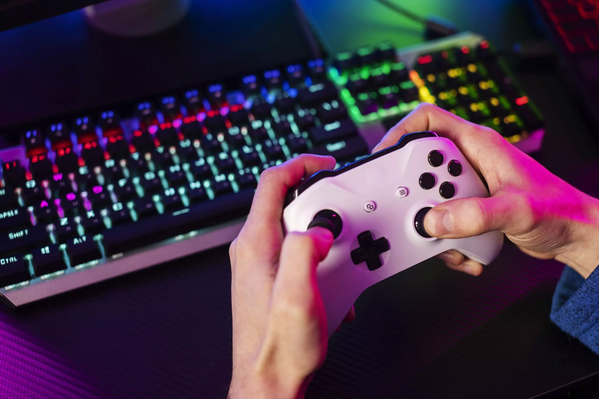

Descripción de losVIDEOJUEGOS
Los videojuegos son programas interactivos
de entretenimiento que permiten a los
usuarios participar en una experiencia virtual
simulada. A través de un controlador o
dispositivo de entrada, los jugadores interactúan
con el juego, controlando personajes,
Contenido sobre VIDEOJUEGOS
Tipos de videojuegos:
Existen una gran variedad de videojuegos, clasificados por diversos criterios como género, plataforma, estilo de juego y público objetivo. Algunos de los géneros más populares son:
Acción: juegos que se basan en la acción y reflejos del jugador, como disparos, plataformas y lucha.
Aventura: juegos que exploran mundos abiertos, resuelven puzzles y descubren historias.
Rol: juegos en los que el jugador asume el rol de un personaje y desarrolla sus habilidades a través de la historia.
Estrategia: juegos que requieren planificación y toma de decisiones para lograr la victoria.
Deporte: juegos que simulan deportes reales, como fútbol, baloncesto y carreras.
Simulación: juegos que imitan procesos o sistemas del mundo real, como vuelo, conducción y construcción. Porque fue el primer Pokemon que se vio en las primeras temporadas del anime y siempre fue compañero del protagonista